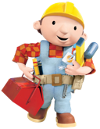

It is a time consuming process to maintain Blueprints implementations as graph database/framework versions and features change. Many developers focusing on a particular implementation is an ideal way of ensuring that Blueprints has wide reach and is always consistent with the latest developments. If there is a graph database/framework that is currently not supported by Blueprints and you are an expert with that system, please contribute an implementation. To get a feel of what is required, see Property Graph Model and Property Graph Model Test Suite.
Below is a list of desired implementations. This list is not intended to be exhaustive. Please feel free to add to the list.
Sail constructor is needed)